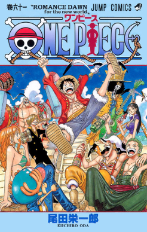
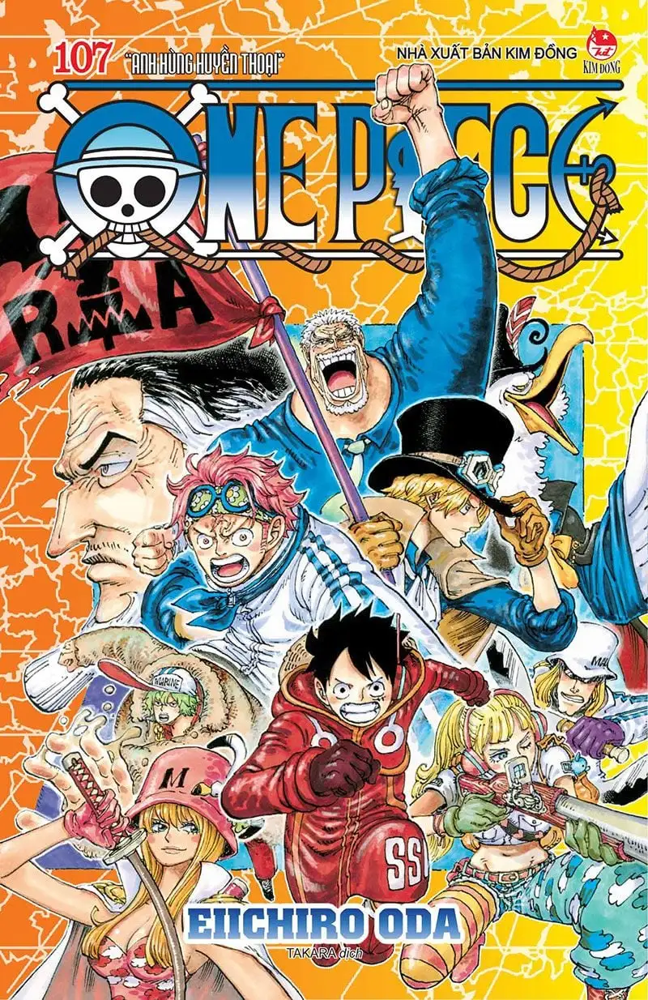
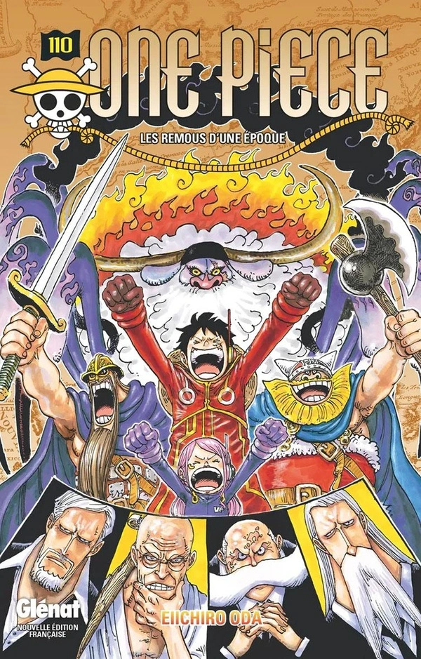
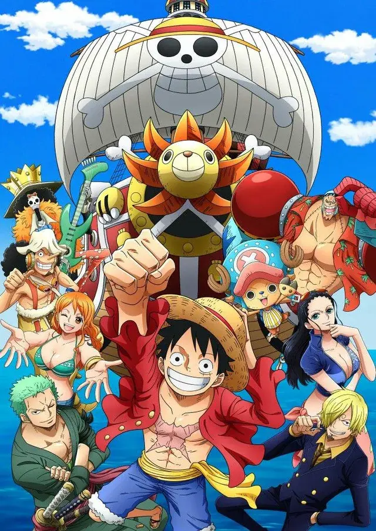
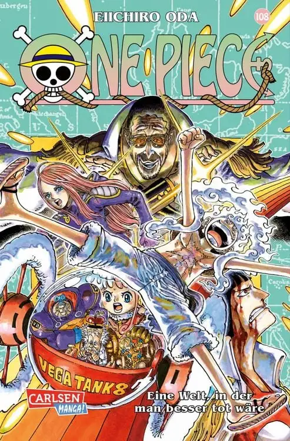
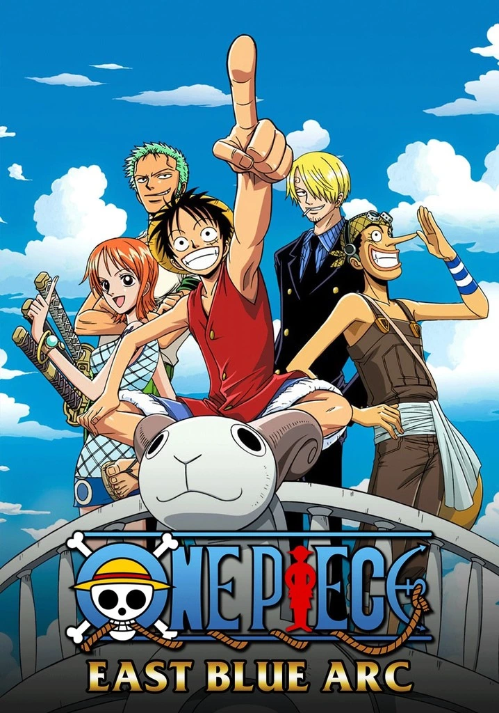
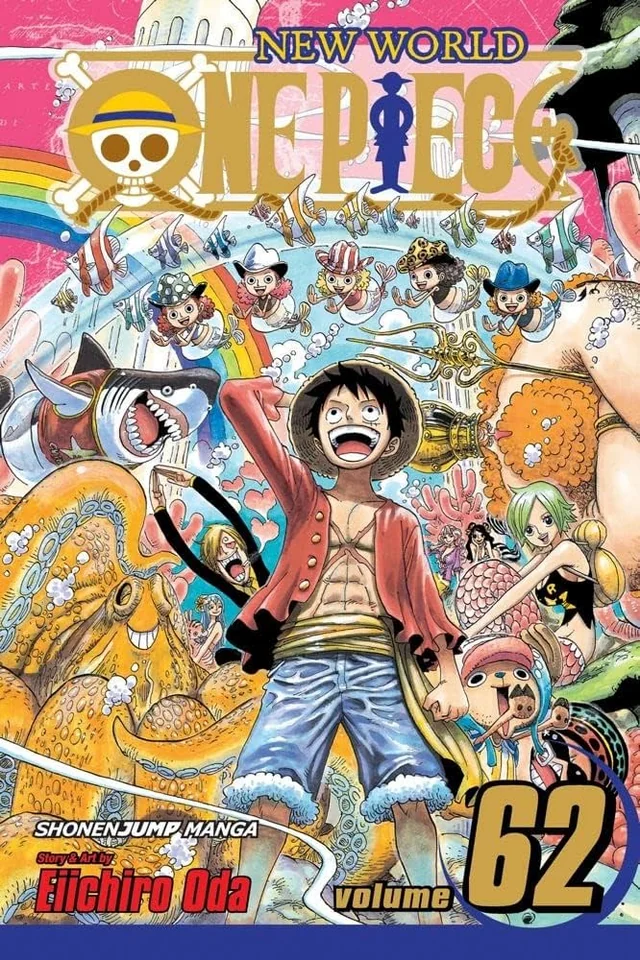
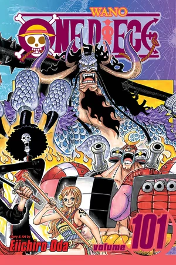

ONE PIECE SEASONS

SKY ISLAND
Episodes - 43

MARINEFORD
Episodes - 33

WATER SEVEN
Episodes - 35

ARABASTA
Episodes - 39

EGG HEAD
Episodes - 69

EAST BLUE
Episodes - 61

FISHER MAN ISLAND
Episodes - 21

W A N O
PART 1
Episodes - 119

W A N O
PART 2
Episodes - 78